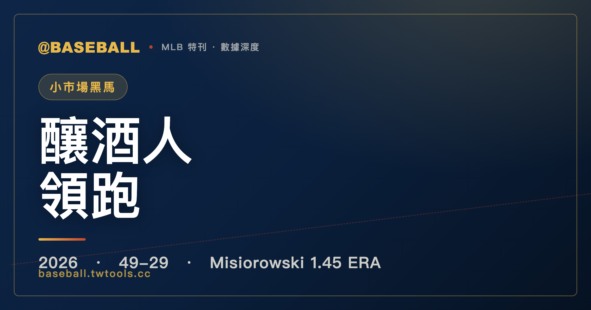

防禦率 1.45，得失分淨值 +123：密爾瓦基釀酒人 2026 的小市場方程式
2026 年 6 月 25 日，密爾瓦基釀酒人以 49 勝 29 敗坐穩國聯中區第一，領先優勢整整 7 場。這不是大市場球隊靠頂薪轉會買來的戰績——它建立在得失分淨值 +123 的系統性優勢、以及一名防禦率 1.45 的年輕先發投手身上。賽季已過半，小市場球隊的方程式能不能撐過下半段，答案還在寫。

MLB 特刊｜密爾瓦基釀酒人 2026
六月下旬的大聯盟，各分區的格局正在逐漸成形。在一個充滿大市場球隊、頂薪球星、天價轉會合約的時代，密爾瓦基釀酒人（Milwaukee Brewers）給出了一個完全不同的答案。截至 2026 年 6 月 25 日，這支球隊以 49 勝 29 敗坐在國聯中區第一，勝率 .628，甩開第二名整整 7 場，近況四連勝。如果只看這個數字，它還算不上震驚全聯盟——每個賽季都有人領跑分區。但把數字往下拆，才看得到這個戰績的底層是什麼材質構成的。
今季釀酒人攻下 407 分、失守 284 分，得失分淨值 +123。在 78 場比賽的跨度裡，平均每場比對手多得將近 1.6 分，這不是小幅優勢，而是系統性的壓制能力。更值得注意的是主客場拆分：主場 25 勝 15 敗（.625），客場 24 勝 14 敗（.632）——客場勝率比主場還略高，說明這支球隊的實力不靠主場環境撐起來，而是均衡且可以帶到任何球場的真實競爭力。
帶動這一切的，有一個名字在 2026 年開始被整個聯盟討論：雅各・米索羅斯基（Jacob Misiorowski）。他是一名今年站穩先發輪次的年輕投手，15 場先發，防禦率 1.45，WHIP 0.75，每九局三振率 13.35，三振 138 次，被安打僅 47 支。他或許還不是全國性的招牌球星，但數據已經把他推進賽揚獎（Cy Young）的討論核心。不過賽季才過一半，15 場先發的樣本在一個完整球季的框架裡，只是一個開始。而真正的考驗，從來不是他前半季有多強，而是釀酒人會如何管理他下半季的投球局數與疲勞累積。這篇文章試著把數字說清楚，把能說和不能說的都放在正確的位置上。
一、49 勝 29 敗，得失分淨值 +123：勝績的底層邏輯
棒球的勝敗紀錄常常只告訴你結果，不告訴你為什麼。要理解釀酒人今年的戰績，必須先把它分層拆開。
截至 6 月 25 日，釀酒人在 78 場例行賽裡拿下 49 勝 29 敗，其中主場出賽 40 場、客場出賽 38 場：
| 密爾瓦基釀酒人 2026 戰績（截至 6/25） | 勝 | 敗 | 勝率 |
|---|---|---|---|
| 主場 | 25 | 15 | .625 |
| 客場 | 24 | 14 | .632 |
| 全季合計 | 49 | 29 | .628 |
| 本季得分 | 407 | — | — |
| 本季失分 | — | 284 | — |
| 得失分淨值 | +123 | — | — |
主場 .625 對客場 .632，兩者差距只有 0.007，客場甚至略勝主場。這是一個需要特別拿出來說的數字。在大聯盟，絕大多數球隊都在主場享有可觀的勝率優勢——原因是多方面的：主場球員熟悉球場尺寸與草皮性質、主場觀眾製造的噪音干擾對方打者的專注、客場出征時的旅途疲勞也會逐漸侵蝕球員狀態。一支球隊能在客場維持和主場幾乎對等甚至更高的勝率，通常代表他們的實力不依賴特定環境，而是跟著球員個人的競技水準走的。釀酒人今年 24 勝 14 敗的客場紀錄，是理解他們實力真偽的第一把鑰匙。
得失分淨值 +123 是另一個更需要認真對待的指標。棒球統計學裡，得失分淨值（run differential）被廣泛用來評估球隊的真實競爭力，原因是它不受一場比賽的偶發性影響，而是在相對長的賽季跨度裡反映攻守的系統性優劣。一支靠幸運逆轉堆出戰績的球隊，得失分淨值通常不會好看；反過來，淨值長期在高水位的球隊，其戰績通常比表面數字更為可靠，也更能在下半段維持。78 場 +123 分，意味著釀酒人在大多數比賽裡是靠得分優勢決定勝負的，而不是仰賴逆轉或九局下半的奇蹟。這個底層骨架，是他們 49-29 戰績值得信任的最主要原因。
近況方面，釀酒人正帶著四連勝（W4）的走勢進入下半賽季，狀態與動能都在好的方向。七場領先的差距加上四連勝的近況，搭配起來，是一個讓人很難輕易唱衰的當前位置。
二、國聯中區格局：7 場差距，誰在追？
釀酒人的 7 場優勢，放進整個國聯中區的格局裡才看得出重量。
| 2026 國聯中區積分榜（截至 6/25） | 勝 | 敗 | 勝差 |
|---|---|---|---|
| 密爾瓦基釀酒人 | 49 | 29 | — |
| 聖路易紅雀 | 42 | 36 | 7.0 |
| 芝加哥小熊 | 43 | 37 | 7.0 |
| 匹茲堡海盜 | 40 | 40 | 10.0 |
| 辛辛那提紅人 | 37 | 42 | 12.5 |
先看一個乍看有點反直覺的細節：分區第二名的聖路易紅雀（42 勝 36 敗），勝場數實際上少於排名第三的芝加哥小熊（43 勝 37 敗），但紅雀的排名在前。這是因為小熊今年出賽場次多了兩場，按勝率計算，紅雀 .538 微幅高於小熊 .537，因此排名略前。不過這兩支球隊對釀酒人的勝差都是 7.0 場，競爭位置非常接近，是目前國聯中區最有可能向釀酒人施壓的追趕者。
7 場差距在棒球分區競爭的脈絡裡意味著什麼？首先，它不是無法跨越的天塹。棒球賽季夠長，歷史上有過球隊從更大差距追回來的案例，通常靠的是對手的連敗崩盤、加上自身的長勝串聯同時發生。但在正常的賽季節奏裡，縮小 7 場差距需要對手和追趕者的走勢在相當長的時間裡背道而馳——這在統計上不是不可能，但機率是下降的。目前紅雀和小熊的勝率都停在 .537-.538 的區間，尚未展現出足以發動大規模追趕的統治形態；如果他們在七八月無法打出顯著超越釀酒人的走勢，這個差距會維持甚至擴大。
往下看，匹茲堡海盜 40 勝 40 敗，差距 10 場；辛辛那提紅人 37 勝 42 敗、勝率低於五成，差距 12.5 場。這兩支球隊在目前的局面下，構成分區威脅的可能性已相當有限。
誠實的說法是：7 場差距是六月底的快照，不是冠軍保證。棒球的故事每個月都可以重寫，這個差距是目前可以確定的優勢，而不是賽季結果的預言。
三、雅各・米索羅斯基：防禦率 1.45 的逐項解剖
現在到這支球隊 2026 年故事裡最核心的部分：雅各・米索羅斯基（Jacob Misiorowski）。
他不是用某一個偏鋒武器壓制打者的類型，而是在多個面向同時施壓、讓打者沒有固定的應對策略可用。從開幕戰至今 15 場先發，他的數字幾乎每個面向都在同一時間指向同一個結論：這是一個目前讓打線幾乎無法正常運作的投手。下面是他完整的賽季投球統計：
| 米索羅斯基 2026 賽季投球統計（截至 6/25） | 數字 |
|---|---|
| 先發場次 GS | 15 |
| 勝 W | 8 |
| 敗 L | 3 |
| 防禦率 ERA | 1.45 |
| 投球局數 IP | 93.0 |
| 三振 SO | 138 |
| 保送 BB | 23 |
| 被安打 H | 47 |
| WHIP | 0.75 |
| 每九局三振 K/9 | 13.35 |
把這幾個數字逐項拆開來讀：
防禦率 1.45：大聯盟的防禦率分布大致如下：聯盟平均先發投手全季防禦率在 4.50 上下；能以 3.00 以下完賽的先發，已是各隊輪次裡的頂樑柱等級；季末能守在 2.00 以下的，基本上就是賽揚獎候選人的競爭圈。1.45 的賽季中期數字，即便放在 15 場先發的樣本限制下，仍然代表他在過去三個月裡，對大多數大聯盟打線實施了近乎全面性的壓制。這個數字如果放在完整賽季，會是近代棒球最低防禦率的行列；即便賽季過半後逐漸回升，它目前所代表的主宰品質也已是聯盟少見的。
WHIP 0.75：WHIP 計算方式是（被安打加保送）除以投球局數，代表每局平均允許多少跑者上壘。米索羅斯基 47 支被安打加上 23 次保送，93 局共放上 70 個跑者，平均每局約 0.75 人——換句話說，他平均每四局才讓三個人上壘，大多數局次幾乎都是乾淨的三上三下或接近三上三下。頂尖先發投手的 WHIP 通常在 1.00-1.10 之間；0.75 屬於少見的精準控制等級，意味著他幾乎不給跑者製造得分威脅的機會，守備和牛棚的壓力自然也跟著降低。
三振與保送比（K/BB = 6.00）：138 次三振對上 23 次保送，比率剛好為 6.00。K/BB 是衡量投手控球精準度與主動攻擊性的綜合指標——比率越高，代表投手能在精準控球的前提下主動出擊追求三振，而不是靠壓縮好球帶邊緣、緊繃地避免保送來度過每一個打席。6.00 的 K/BB 比在先發投手中屬於稀有的高精準區間：他不是那種邊邊角角投、把保送當成投球武器的類型，而是有能力以主動的姿態把打者送上三振計數器的投手。
每九局三振（K/9 = 13.35）：這代表他平均每九局送出超過 13 個三振，幾乎每兩個半打者就有一個靠揮空出局。在職業棒球的打擊水準下，K/9 達到 10.0 就已是高三振率先發的等級；13.35 代表他對打者製造揮空的效率遠高於一般先發，打者對他的球路有系統性的應對困難，無法靠穩健的接觸式打擊製造安打機會。138 次三振在 93 局裡，也意味著他能長期輸出高品質局數——三振率高的投手通常不需要依賴守備來幫他製造出局數，自己就能把局面清乾淨。
被安打僅 47 支：93 局只被打出 47 支安打，對應的被打擊率（BAA，Batting Average Against）極低。這個數字配合高三振率一起看，說明打者在對上他時，不只是「打了但沒有力量」，而是根本無法穩定接觸球心——球路的欺騙性或球速對打者製造了真實的接觸困難，而不只是讓打者把球打向野手的正面。被安打少，加上保送少，加上三振多，三個指標同時壓低，代表的是一個在控球精準度與制壓性之間取得了非常高度均衡的投手形態。
勝敗紀錄（8-3）：棒球的勝敗紀錄受球隊得分支援影響甚鉅，不能單獨當作投手品質的評判依據。但結合 1.45 的防禦率，這個 8-3 至少告訴我們：在他主宰的大多數局面裡，釀酒人確實把勝利轉化了下來，而不是讓他在高品質的投球之後卻頻繁嚐到無援的苦果。
整體看這些數字，彼此之間是相互印證的：低防禦率 + 低 WHIP + 低被安打 + 高三振 + 低保送，每一個面向都指向同一個方向。這是一個在 15 場先發裡，對聯盟打線進行了近乎全面壓制的投手——至少在目前的數據截面上，是如此。
四、逐場先發記錄：從適應期到主宰期
整體數字固然驚人，但按場次順序攤開每一場先發，才能看到米索羅斯基在 2026 年走過的軌跡——以及這個軌跡意味著什麼。
| 先發 | 日期 | 對手 | 投球局數 | 自責分 | 三振 | 結果 |
|---|---|---|---|---|---|---|
| 1 | 3/26 | 芝加哥白襪 | 5.0 | 1 | 11 | W |
| 2 | 4/01 | 坦帕灣光芒 | 6.0 | 2 | 7 | — |
| 3 | 4/07 | 波士頓紅襪 | 5.1 | 3 | 10 | L |
| 4 | 4/14 | 多倫多藍鳥 | 5.1 | 2 | 5 | — |
| 5 | 4/19 | 邁阿密馬林魚 | 5.0 | 1 | 9 | L |
| 6 | 4/25 | 匹茲堡海盜 | 6.0 | 3 | 9 | — |
| 7 | 5/01 | 華盛頓國民 | 5.1 | 0 | 8 | W |
| 8 | 5/08 | 紐約洋基 | 6.0 | 0 | 11 | W |
| 9 | 5/13 | 聖地牙哥教士 | 7.0 | 0 | 10 | — |
| 10 | 5/19 | 芝加哥小熊 | 6.0 | 0 | 8 | W |
| 11 | 5/25 | 聖路易紅雀 | 7.0 | 1 | 12 | W |
| 12 | 5/31 | 休士頓太空人 | 7.0 | 0 | 8 | W |
| 13 | 6/06 | 科羅拉多洛磯 | 7.0 | 0 | 8 | W |
| 14 | 6/12 | 費城費城人 | 9.0 | 0 | 15 | W |
| 15 | 6/19 | 亞特蘭大勇士 | 6.0 | 2 | 7 | L |
把這張表分三個階段來讀，會看到一條非常清晰的弧線：
第一階段：適應期（先發 1-6，3 月底至 4 月底）
開季前六場，米索羅斯基的三振能力從第一場就已展現——開幕戰對芝加哥白襪送出 11 次三振，第三場對波士頓紅襪也達到 10 次——但失分的起伏拉高了初期的防禦率。前六場合計 32.2 局、12 分自責分，換算防禦率約 3.31。這個數字本身並不差，但投球局數停在 5 至 6 局之間、出現兩場各失 3 分的場次（對紅襪、對匹茲堡海盜），說明他在這個時期仍在調整——調整如何把三振能力與更穩定的局數輸出結合在一起，調整如何在複雜的打線面前找到自己的節奏。這種「天花板很高、但天花板觸碰不穩定」的狀態，是年輕先發在開季初期非常常見的形態。
第二階段：主宰期（先發 8-14，5 月 8 日至 6 月 12 日）
從 5 月 8 日對紐約洋基開始，米索羅斯基進入了一段令人目瞪口呆的主宰時期。這七場先發——洋基、聖地牙哥教士、芝加哥小熊、聖路易紅雀、休士頓太空人、科羅拉多洛磯、費城費城人——合計 49 局投球，自責分合計僅 1 分。這 49 局裡只有 5 月 25 日對紅雀的那一場失了 1 分，其餘六場全部零分。折算下來，這七場先發的防禦率約 0.18。這不是一場的狀態爆發，而是連續兩個月的系統性壓制，而且面對的都不是弱旅——洋基、教士、太空人都是競爭力強勁的球隊，他照樣讓他們的打線陷入困境。投球局數也在這段時期穩定拉長：從 6 局成長到 7 局，最後在第 14 場抵達最高點。
6 月 12 日對費城費城人，是這個主宰期的最清晰縮影。九局完投、零分自責分、15 次三振——完封。費城費城人並不是好惹的對手，但米索羅斯基整場把他們打者的出棒機會壓縮到近乎無解：九局九十個出局數，15 個靠揮空三振，其餘全部靠守備幫他收下。這是他今年唯一一場完封（complete game shutout），代表他有能力在最頂尖的輸出狀態下吃滿九局，完全不需要牛棚接力分擔壓力。對一個先發輪次來說，這是最好的情境：核心投手在比賽裡從頭到尾掌控全局，不耗損一滴牛棚實力。
第三階段：降落信號，還是正常波動？（先發 15，6 月 19 日）
6 月 19 日對亞特蘭大勇士，6 局 2 分自責分、7 次三振，拿到敗投。這是他自 5 月 1 日以來 15 場裡失分最多的一場（並列前六場的兩場 3 失分場次之後）。要不要把這場解讀為「主宰期結束」？現在說這個還太早。亞特蘭大勇士是國聯的強隊，6 局 2 ER 在先發投手的正常浮動範圍之內，不足以單憑一場就定性為趨勢性下滑。更合理的觀察是：他結束了一段在統計上幾乎不可能長期維持的超強宰制期，回到了「非常好的先發投手」應有的優秀水準，而這個水準本身就已是聯盟極少數投手能達到的位置。用一場比賽定論趨勢，在統計上太過輕率。
但這場比賽確實提醒了一件重要的事：即便是賽季防禦率 1.45 的投手，也不是沒有被攻略的場次。承認這一點，才是對這 15 場先發最誠實的讀法。
整條弧線合在一起，說的是：一個在開季時有著高三振能力但仍在調整穩定性的年輕先發，在五月初找到了開關，在接下來的兩個月裡展現出了聯盟最頂端的主宰形態，並在六月初用一場完封完整詮釋了這個新層次的自己。這個成長的過程，透過逐場數字，幾乎可以精確定位在 2026 年 5 月初——那是釀酒人今年最值得珍視的一個轉折點。
五、小市場的生存方程式：贏在哪，又脆弱在哪
理解了戰績和投手數字之後，最後一個問題是：密爾瓦基釀酒人，憑什麼？
密爾瓦基是威斯康辛州最大的城市，但在大聯盟的市場版圖裡，它離洛杉磯、紐約、芝加哥的規模有著相當的距離。在電視轉播收益、球迷人口基礎、薪資操作空間這三個維度上，釀酒人長期都是結構性的弱勢方。大聯盟的小市場球隊過去數十年形成了一個幾乎可以預期的循環：從農場體系培育便宜的年輕球員，在球員仲裁薪資上漲前短暫拼搶幾年，等核心球員要求大合約時就把人賣掉、進入下一輪重建。這個循環讓小市場球隊很難像大市場球隊那樣，靠砸錢維持長達十年以上的長期競爭窗口。釀酒人球迷對這個模式並不陌生。
但 2026 年的釀酒人，至少在賽季過半的這個截面上，正在把這個方程式的某幾個環節用得很好。得失分淨值 +123 說明攻守均衡是真實的，不是靠賽程運氣或對手失誤堆出來的；主客場接近對等的勝率說明不依賴特定環境；而讓這一切得以維持的底層資產，正是先發輪次頂端的米索羅斯基。一個從農場培育出來、薪資遠低於市場成熟先發投手的年輕球員，如果能在大聯盟打出 1.45 ERA 的表現，他對球隊創造的價值遠超出他的薪資成本——這正是小市場建隊邏輯的核心競爭槓桿：在大市場球隊用巨額合約買進已有名氣的成熟球員時，小市場球隊用農場押注年輕球員的成長上限。押中了，就是 2026 年的米索羅斯基；押錯了，就是空有農場無法轉化的重建期。今年，密爾瓦基賭對了這一個。
但小市場方程式也有其結構性的脆弱點，必須誠實指出，而不是用「驚喜之隊」的光環把它蓋過去。
第一，15 場先發的樣本不是全貌。在一個完整的 162 場賽季裡，先發投手通常需要 30-34 場先發才構成一個統計上有說服力的完整評估。1.45 的防禦率、0.75 的 WHIP、13.35 的 K/9，每一個數字在 15 場先發的脈絡裡都是驚人的，但棒球歷史上有過太多「上半季神投手、下半季快速回歸正常」的案例——可能是對手累積了米索羅斯基的投球影片、找到了應對策略；可能是長期高強度投球帶來了疲勞；也可能是早期賽程的對手陣容相對較弱等因素交互影響。WHIP 0.75 和 K/9 13.35 都是驚人的中期數字，但它們在完整賽季後段能維持在什麼位置，必須等更多場次才能回答。這不是在否定他目前的成就，而是對中期數據應有的誠實態度。
第二，小市場球隊缺乏主力受傷的替補深度。若米索羅斯基在下半段因傷缺陣或出現效能的實質性下滑，釀酒人在轉會截止日（trade deadline）能否有資源補強先發輪次，是一個關鍵的未知數。大市場球隊能在七月份用現金換來一個成熟的先發投手填補空缺，但小市場球隊的操作彈性相對有限——農場裡的籌碼有限，薪資空間也有限。這個不對稱性在賽季前半段看不出來，一旦主力出問題，往往才成為致命的差距。
第三，7 場差距不是終局保證。九月底才是分區結果確定的時刻。7 場差距在六月底是舒適的，但棒球的賽季足夠長，足以讓任何差距縮小或消失。要評估釀酒人「能不能走到最後」，目前還沒有足夠的數據基礎做出定論；現在確定的，只是他們在 78 場的截面上，打出了國聯中區最好的棒球。
賽季仍在進行中。
密爾瓦基釀酒人的 2026 上半段，可以用三個數字精準地概括目前的位置：49-29，+123，1.45。第一個是戰績的表面，第二個是支撐戰績的底層骨架，第三個是一個年輕投手在 15 場先發裡交出的成績單。這三個數字合在一起，說的是：這支小市場球隊在 2026 年的前半段，用正確的方式打出了值得認真對待的棒球——得失分均衡、主客場均衡、先發輪次頂端有一個讓打者頭痛的新星。
誠實的說法是：這是一個值得繼續追蹤的故事，不是一個已經蓋棺定論的答案。米索羅斯基的成就在賽季中期是真實的，但真正的考驗是他能否在下半段維持這個輸出水準；釀酒人的 7 場優勢是真實的，但 9 月底才是分區競爭結果確定的時刻。小市場球隊的方程式從來不是保證，而是一個押注——押注年輕球員的成長曲線、押注系統性的攻守均衡能撐過整個賽季。到今天為止，這個押注暫時領先。而這個「暫時」，在棒球裡是一個充滿可能性的詞。
資料來源：MLB 官方 StatsAPI；投手數據、球隊戰績、主客場拆分、得失分紀錄及逐場先發記錄均截至 2026 年 6 月 25 日，賽季進行中，數字可能隨後續比賽更新。